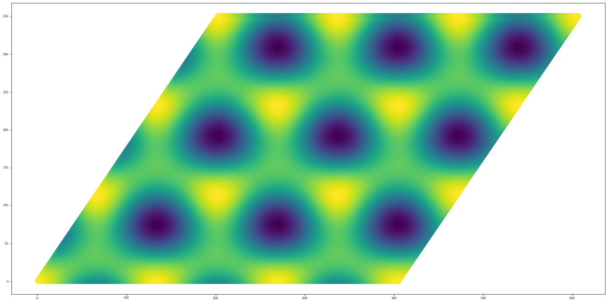
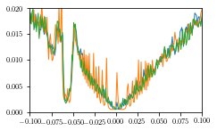
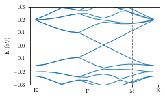
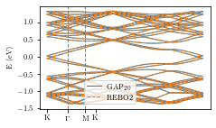
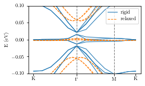
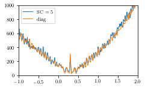

[1]:
setLatex = False
import warnings
warnings.filterwarnings('ignore')
from scipy.optimize import curve_fit
#import pybinding as pb
import matplotlib.pyplot as plt
import numpy as np
import copy
import os
import re
import sys
from IPython.display import Math
from matplotlib import rc
rc('font',**{'family':'sans-serif','sans-serif':['Helvetica']})
## for Palatino and other serif fonts use:
#rc('font',**{'family':'serif','serif':['Palatino']})
rc('text', usetex=True)
from importlib import reload
LongScripts = "/Users/nihao/Dropbox/Documents/Career/Calculs/Scripts/"
os.chdir(LongScripts)
import methodsLongitudinal as ml
reload(ml)
from copy import deepcopy
from scipy.spatial import cKDTree
from math import pi, sqrt
#from pybinding.repository.graphene import a, a_cc, t
import pickle
import scipy.ndimage.filters
import matplotlib
from pylab import *
import matplotlib.gridspec as gridspec
def latexify(fig_width=None, fig_height=None, columns=1):
"""Set up matplotlib's RC params for LaTeX plotting.
Call this before plotting a figure.
Parameters
----------
fig_width : float, optional, inches
fig_height : float, optional, inches
columns : {1, 2}
"""
# code adapted from http://www.scipy.org/Cookbook/Matplotlib/LaTeX_Examples
# Width and max height in inches for IEEE journals taken from
# computer.org/cms/Computer.org/Journal%20templates/transactions_art_guide.pdf
assert(columns in [1,2])
if fig_width is None:
fig_width = 3.39 if columns==1 else 6.9 # width in inches
if fig_height is None:
golden_mean = (sqrt(5)-1.0)/2.0 # Aesthetic ratio
fig_height = fig_width*golden_mean # height in inches
#MAX_HEIGHT_INCHES = 7.0
#if fig_height > MAX_HEIGHT_INCHES:
# print("WARNING: fig_height too large:" + fig_height +
# "so will reduce to" + MAX_HEIGHT_INCHES + "inches.")
# fig_height = MAX_HEIGHT_INCHES
params = {'backend': 'ps',
'text.latex.preamble': [r'\usepackage{gensymb}'],
'axes.labelsize': 8, # fontsize for x and y labels (was 10)
'axes.titlesize': 8,
'font.size': 8, # was 10
'legend.fontsize': 8, # was 10
'xtick.labelsize': 8,
'ytick.labelsize': 8,
'text.usetex': True,
'figure.figsize': [fig_width,fig_height],
'font.family': 'serif',
'figure.autolayout': True,
'lines.linewidth' : 1.0
}
matplotlib.rcParams.update(params)
def format_axes(ax):
SPINE_COLOR = 'gray'
for spine in ['top', 'right']:
ax.spines[spine].set_visible(False)
for spine in ['left', 'bottom']:
ax.spines[spine].set_color(SPINE_COLOR)
ax.spines[spine].set_linewidth(0.5)
ax.xaxis.set_ticks_position('bottom')
ax.yaxis.set_ticks_position('left')
for axis in [ax.xaxis, ax.yaxis]:
axis.set_tick_params(direction='out', color=SPINE_COLOR)
#q_sigma = c0 * 22.2 # [nm] hopping fitting parameter
#q_pi = a_cc * 22.2 # [nm] hopping fitting parameter
#r0 = 0.184 * a # [nm] hopping fitting parameter
from mpl_toolkits.axes_grid1 import make_axes_locatable
def getBandstructure(dir1, nPlotBands, EShift):
f = open(dir1+'/generate.bands.dat','r')
print(f)
i = 0
j = 0
l = 0
k = []
E = []
kVec = []
EVec = []
counterPlotBands = 0
for line in f:
i = i+1
a = line.split()
if i==10:
nbands = int(a[5])
print(nbands)
nk = int(a[7])
print(nbands,nk)
if i>16:
if len(a)==0:
j = j+0.5
#print(j)
else:
if (int(j)==int(nbands/2-nPlotBands/2 + counterPlotBands) and int(j) < int(nbands/2+nPlotBands/2)):
if l<nk:
k.append(float(a[0]))
E.append((float(a[1])-EShift))
l = l+1
if l==nk:
kVec.append(k)
EVec.append(E)
l = 0
counterPlotBands += 1
k = []
E = []
return kVec, EVec
def getSingleBand3(dir1, EShift, bandIndex):
f = open(dir1+'/generate.bands.dat','r')
i = 0
j = 0
l = 0
k = []
E = []
kVec = []
EVec = []
counterPlotBands = 0
for line in f:
i = i+1
a = line.split()
if i==10:
nbands = int(a[5])
nk = int(a[7])
#print(nbands,nk)
if i>14:
if len(a)==0:
j = j+0.5
#print(j)
else:
#print(nbands)
if (int(j)==int(nbands/2) + bandIndex):
if l<nk:
k.append(float(a[0]))
E.append(float(a[1])-EShift)
l = l+1
if l==nk:
kVec.append(k)
EVec.append(E)
l = 0
counterPlotBands += 1
k = []
E = []
return kVec, EVec
def getGap(dir1, EShift):
Emin = 10000000
Emax = -10000000
bandIndexVec = [-1]
for bandIndex in bandIndexVec:
kVec, EVec = getSingleBand3(dir1, EShift, bandIndex)
i = 0
if (np.max(EVec)>Emax):
Emax = np.max(EVec)
#if (np.min(EVec)<Emin):
# Emin= np.min(EVec)
bandIndexVec = [0]
for bandIndex in bandIndexVec:
kVec, EVec = getSingleBand3(dir1, EShift, bandIndex)
i = 0
if (np.min(EVec)<Emin):
Emin= np.min(EVec)
gap = (Emin - Emax)*1000
return gap
def getGap2(dir1, EShift):
Emin = 10000000
Emax = -10000000
bandIndexVec = [-3]
for bandIndex in bandIndexVec:
kVec, EVec = getSingleBand3(dir1, EShift, bandIndex)
i = 0
if (np.max(EVec)>Emax):
Emax = np.max(EVec)
#if (np.min(EVec)<Emin):
# Emin= np.min(EVec)
bandIndexVec = [-2]
for bandIndex in bandIndexVec:
kVec, EVec = getSingleBand3(dir1, EShift, bandIndex)
i = 0
if (np.min(EVec)<Emin):
Emin= np.min(EVec)
gap = (Emin - Emax)*1000
return gap
def getEnergyCutPlot(dir1, chosenEnergy, Nx, Ny, cutoffMin, cutoffMax, nEnergy):
os.chdir(dir1)
data = np.genfromtxt("generate.spectral",skip_header=4)
kx = data[:,0]
ky = data[:,1]
kz = data[:,2]
energy = (data[:,3]*3.5)-0.31
spectral = data[:,4]
cutoffMin = cutoff
cutoffMax = cutoff
i = 0
j = 0
eigVec = []
spectralVec = []
eig = np.zeros(nEnergy)
spect = np.zeros(nEnergy)
k = np.zeros(shape=(Nx*Ny,2))
for el1, el2, el3, el4 in zip(kx,ky,energy,spectral):
i = i+1
if (i==1):
k[j,0] = el1
k[j,1] = el2
if (i<=nEnergy):
eig[i-1] = el3
spect[i-1] = el4
if (i==nEnergy):
eigVec.append(eig)
spectralVec.append(spect)
i = 0
j = j+1
eig = np.zeros(nEnergy)
spect = np.zeros(nEnergy)
eigTrueVec = []
for i, kki in enumerate(k):
eigTrue = np.zeros(nEnergy)
eig = eigVec[i]
spec = spectralVec[i]
eigTrue[np.logical_and(np.logical_and(eig>chosenEnergy-cutoffMin,eig<chosenEnergy+cutoffMax),spec>0.0)] = 1.0
specSum = np.sum(spec[np.logical_and(np.logical_and(eig>chosenEnergy-cutoffMin,eig<chosenEnergy+cutoffMax),spec>0.0)])
if (eigTrue.any()==1):
eigTrueVec.append(specSum)
else:
eigTrueVec.append(0)
return k, eigTrueVec
K1 = np.array([1.70276024584813, 0.0000])
K1p = np.array([1.70243417150001, 3.332186294066186E-002])
def getEnergyCutPlot2(dir1, chosenEnergy, Nx, Ny, cutoffMin, cutoffMax, nEnergy):
os.chdir(dir1)
data = np.genfromtxt("generate.spectral")
kx = data[:,0]
ky = data[:,1]
kz = data[:,2]
energy = (data[:,3]*3.5)-0.31
spectral = data[:,4]
cutoffMin = cutoff
cutoffMax = cutoff
i = 0
j = 0
eigVec = []
spectralVec = []
eig = np.zeros(nEnergy)
spect = np.zeros(nEnergy)
k = np.zeros(shape=(Nx*Ny,2))
for el1, el2, el3, el4 in zip(kx,ky,energy,spectral):
i = i+1
if (i==1):
k[j,0] = el1
k[j,1] = el2
if (i<=nEnergy):
eig[i-1] = el3
spect[i-1] = el4
if (i==nEnergy):
eigVec.append(eig)
spectralVec.append(spect)
i = 0
j = j+1
eig = np.zeros(nEnergy)
spect = np.zeros(nEnergy)
eigTrueVec = []
for i, kki in enumerate(k):
eigTrue = np.zeros(nEnergy)
eig = eigVec[i]
spec = spectralVec[i]
eigTrue[np.logical_and(np.logical_and(eig>chosenEnergy-cutoffMin,eig<chosenEnergy+cutoffMax),spec>0.0)] = 1.0
specSum = np.sum(spec[np.logical_and(np.logical_and(eig>chosenEnergy-cutoffMin,eig<chosenEnergy+cutoffMax),spec>0.0)])
if (eigTrue.any()==1):
eigTrueVec.append(specSum)
else:
eigTrueVec.append(0)
return k, eigTrueVec
def getDOS(fileName):
data = np.genfromtxt(fileName)
xdata = data[:,0]
ydata = data[:,1]
return xdata, ydata
K1 = np.array([1.70276024584813, 0.0000])
K1p = np.array([1.70243417150001, 3.332186294066186E-002])
[ ]:
Graphene¶
[37]:
os.chdir("/Users/nihao/github/moire_course/grabnes2/inputFiles/graphene/effectiveGBN/")
data = np.genfromtxt("generate.pos")
xdata = data[:,0][::2]
ydata = data[:,1][::2]
data = np.genfromtxt("generate.e")
zdata = data[:,0][::2]
plt.figure(figsize=(20,10))
plt.scatter(xdata, ydata, c=zdata,s=200)#,cmap="gist_ncar")
[37]:
<matplotlib.collections.PathCollection at 0x7fdc9f048130>

[ ]:
[53]:
os.chdir("/Users/nihao/github/moire_course/grabnes2/inputFiles/graphene/LL/m00005/")
xdata, ydata = getDOS("generate.DOS")
plt.plot(xdata,ydata,label="0.2 T")
os.chdir("/Users/nihao/github/moire_course/grabnes2/inputFiles/graphene/LL/m00020/")
xdata, ydata = getDOS("generate.DOS")
plt.plot(xdata,ydata,label="0.8 T")
os.chdir("/Users/nihao/github/moire_course/grabnes2/outputFiles/graphene/SC30/")
xdata, ydata = getDOS("generate.DOS")
plt.plot(xdata,ydata,label="0 T")
plt.xlim(-0.1,0.1)
plt.ylim(0,0.02)
os.chdir("/Users/nihao/github/moire_course/grabnes2/outputFiles/graphene/diag/")
xdata, ydata = getDOS("generate.diag.DOS")
#plt.plot(xdata,ydata)

[50]:
nPlotBands = 40
ncol = 1
nrow = 1
emin = -0.3
emax = 0.3
#emin = -0.002
#emax = 0.007
latexify(columns=1)#, fig_height=1.7)
g1 = gridspec.GridSpec(nrow, ncol)#, height_ratios=[6,1])
g1.update(wspace=0.15, hspace=0.0) # set the spacing between axes.
fig, ((ax0)) = plt.subplots(nrow, ncol, sharex='col', sharey='row')
ax0 = subplot(g1[0])
kpoint = 0.0
gpoint = 0.032230
mpoint = 0.060143
kppoint = 0.076259
factor = kppoint
max1_08 = 0.078838
max1_12 = 0.078838
EShift = 0
dir1 = "/Users/nihao/github/moire_course/grabnes2/inputFiles/graphene/diag/bands/"#/useReadXYZ/"
kVec, EVec = getBandstructure(dir1, nPlotBands, EShift)
i = 0
for el1, el2 in zip(kVec,EVec):
i = i+1
if (i==1):
#ax0.plot(el1, el2,color="C1",label=r"KC$_{VV10}$")
ax0.plot(el1, el2,color="C0",label=r"GBN")
else:
ax0.plot(el1, el2,color="C0")
#dir1 = "/Users/nihao/Dropbox/Documents/Career/Calculs/twistedBilayer/substrate/RPA/freestandingMagic/"
#dir1 = "/Users/nihao/Dropbox/Documents/Career/Calculs/twistedBilayer/substrate/RPA/freestandingStrained/again/"
#dir1 = "/Users/nihao/github/moire_course/grabnes2/outputFiles/tBG//useReadXYZ/"
#kVec, EVec = getBandstructure(dir1, nPlotBands, EShift)
#i = 0
#for el1, el2 in zip(kVec,EVec):
# i = i+1
# if (i==1):
# ax0.plot(el1, el2,"--",color="C1",label=r"REBO2")
# else:
# ax0.plot(el1, el2,"--",color="C1")
#EShift = 0.299
#dir1 = "/Users/nihao/Dropbox/Documents/Career/Calculs/twistedBilayer/substrate/RPA/freestandingMagicStrained/"
#kVec, EVec = getBandstructure(dir1, nPlotBands, EShift)
#i = 0
#for el1, el2 in zip(kVec,EVec):
# i = i+1
# if (i==1):
# ax0.plot(el1, el2,".-",color="C2",label=r"Rebo (renormalized)")
# else:
# ax0.plot(el1, el2,".-",color="C2")
ax0.set_ylim([emin,emax])
#ax0.set_xlim([kpoint,kppoint])
ax0.set_xticks([kpoint, gpoint, mpoint, kppoint])
ax0.set_xticklabels(["K",r"$\Gamma$","M","K"])
##ax0.set_yticklabels([" "])
ax0.axvline(gpoint,linestyle="dashed",color="grey")
ax0.axvline(mpoint,linestyle="dashed",color="grey")
#
#
ax0.set_ylabel("E (eV)")
#
#ax0.legend(loc=(0.26,0.05))
#ax1.legend(loc=0)
#ax1.legend(loc='center left', bbox_to_anchor=(1, 0.5))
#ax0.set_title(r"Drip$^\textrm{Bi}_\textrm{RPA}$")
#os.chdir("/Users/nihao/Dropbox/Projects/RPADripCalculations/Figures")
#os.chdir("/Users/nihao/Dropbox/Apps/Overleaf/Magic Angle Twisted Bilayer Graphene Electronic Structure based on Random Phase Approximation calculations/")
os.chdir("/Users/nihao/Desktop/")
fig.savefig("gap2020tBG.png",dpi=400,bbox_inches="tight")
<_io.TextIOWrapper name='/Users/nihao/github/moire_course/grabnes2/inputFiles/graphene/diag/bands//generate.bands.dat' mode='r' encoding='UTF-8'>
6050
6050 15

[ ]:
tBG¶
[12]:
nPlotBands = 40
ncol = 1
nrow = 1
emin = -0.2
emax = 0.2
#emin = -0.002
#emax = 0.007
latexify(columns=1)#, fig_height=1.7)
g1 = gridspec.GridSpec(nrow, ncol)#, height_ratios=[6,1])
g1.update(wspace=0.15, hspace=0.0) # set the spacing between axes.
fig, ((ax0)) = plt.subplots(nrow, ncol, sharex='col', sharey='row')
ax0 = subplot(g1[0])
kpoint = 0.0
gpoint = 0.032230
mpoint = 0.060143
kppoint = 0.076259
factor = kppoint
max1_08 = 0.078838
max1_12 = 0.078838
EShift = 0.302
dir1 = "/Users/nihao/github/moire_course/grabnes2/outputFiles/tBG/"#/useReadXYZ/"
kVec, EVec = getBandstructure(dir1, nPlotBands, EShift)
i = 0
for el1, el2 in zip(kVec,EVec):
i = i+1
if (i==1):
#ax0.plot(el1, el2,color="C1",label=r"KC$_{VV10}$")
ax0.plot(el1, el2,color="C0",label=r"GAP$_{20}$")
else:
ax0.plot(el1, el2,color="C0")
#dir1 = "/Users/nihao/Dropbox/Documents/Career/Calculs/twistedBilayer/substrate/RPA/freestandingMagic/"
#dir1 = "/Users/nihao/Dropbox/Documents/Career/Calculs/twistedBilayer/substrate/RPA/freestandingStrained/again/"
dir1 = "/Users/nihao/github/moire_course/grabnes2/outputFiles/tBG//useReadXYZ/"
kVec, EVec = getBandstructure(dir1, nPlotBands, EShift)
i = 0
for el1, el2 in zip(kVec,EVec):
i = i+1
if (i==1):
ax0.plot(el1, el2,"--",color="C1",label=r"REBO2")
else:
ax0.plot(el1, el2,"--",color="C1")
#EShift = 0.299
#dir1 = "/Users/nihao/Dropbox/Documents/Career/Calculs/twistedBilayer/substrate/RPA/freestandingMagicStrained/"
#kVec, EVec = getBandstructure(dir1, nPlotBands, EShift)
#i = 0
#for el1, el2 in zip(kVec,EVec):
# i = i+1
# if (i==1):
# ax0.plot(el1, el2,".-",color="C2",label=r"Rebo (renormalized)")
# else:
# ax0.plot(el1, el2,".-",color="C2")
#ax0.set_ylim([emin,emax])
#ax0.set_xlim([kpoint,kppoint])
ax0.set_xticks([kpoint, gpoint, mpoint, kppoint])
ax0.set_xticklabels(["K",r"$\Gamma$","M","K"])
##ax0.set_yticklabels([" "])
ax0.axvline(gpoint,linestyle="dashed",color="grey")
ax0.axvline(mpoint,linestyle="dashed",color="grey")
#
#
ax0.set_ylabel("E (eV)")
#
ax0.legend(loc=(0.26,0.05))
#ax1.legend(loc=0)
#ax1.legend(loc='center left', bbox_to_anchor=(1, 0.5))
#ax0.set_title(r"Drip$^\textrm{Bi}_\textrm{RPA}$")
#os.chdir("/Users/nihao/Dropbox/Projects/RPADripCalculations/Figures")
#os.chdir("/Users/nihao/Dropbox/Apps/Overleaf/Magic Angle Twisted Bilayer Graphene Electronic Structure based on Random Phase Approximation calculations/")
os.chdir("/Users/nihao/Desktop/")
fig.savefig("gap2020tBG.png",dpi=400,bbox_inches="tight")
<_io.TextIOWrapper name='/Users/nihao/github/moire_course/grabnes2/outputFiles/tBG//generate.bands.dat' mode='r' encoding='UTF-8'>
1084
1084 48
<_io.TextIOWrapper name='/Users/nihao/github/moire_course/grabnes2/outputFiles/tBG//useReadXYZ//generate.bands.dat' mode='r' encoding='UTF-8'>
1084
1084 25

[46]:
nPlotBands = 40
ncol = 1
nrow = 1
emin = -0.1
emax = 0.1
#emin = -0.002
#emax = 0.007
latexify(columns=1)#, fig_height=1.7)
g1 = gridspec.GridSpec(nrow, ncol)#, height_ratios=[6,1])
g1.update(wspace=0.15, hspace=0.0) # set the spacing between axes.
fig, ((ax0)) = plt.subplots(nrow, ncol, sharex='col', sharey='row')
ax0 = subplot(g1[0])
kpoint = 0.0
gpoint = 0.032230
mpoint = 0.060143
kppoint = 0.076259
factor = kppoint
max1_08 = 0.078838
max1_12 = 0.078838
EShift = 0.302
dir1 = "/Users/nihao/github/moire_course/grabnes2/outputFiles/tBG/n31/"#/useReadXYZ/"
kVec, EVec = getBandstructure(dir1, nPlotBands, EShift)
i = 0
for el1, el2 in zip(kVec,EVec):
i = i+1
if (i==1):
#ax0.plot(el1, el2,color="C1",label=r"KC$_{VV10}$")
ax0.plot(el1, el2,color="C0",label=r"rigid")
else:
ax0.plot(el1, el2,color="C0")
#dir1 = "/Users/nihao/Dropbox/Documents/Career/Calculs/twistedBilayer/substrate/RPA/freestandingMagic/"
#dir1 = "/Users/nihao/Dropbox/Documents/Career/Calculs/twistedBilayer/substrate/RPA/freestandingStrained/again/"
dir1 = "/Users/nihao/github/moire_course/grabnes2/outputFiles/tBG/n31/useReadXYZ/"
kVec, EVec = getBandstructure(dir1, nPlotBands, EShift)
i = 0
for el1, el2 in zip(kVec,EVec):
i = i+1
if (i==1):
ax0.plot(el1, el2,"--",color="C1",label=r"relaxed")
else:
ax0.plot(el1, el2,"--",color="C1")
#EShift = 0.299
#dir1 = "/Users/nihao/Dropbox/Documents/Career/Calculs/twistedBilayer/substrate/RPA/freestandingMagicStrained/"
#kVec, EVec = getBandstructure(dir1, nPlotBands, EShift)
#i = 0
#for el1, el2 in zip(kVec,EVec):
# i = i+1
# if (i==1):
# ax0.plot(el1, el2,".-",color="C2",label=r"Rebo (renormalized)")
# else:
# ax0.plot(el1, el2,".-",color="C2")
ax0.set_ylim([emin,emax])
#ax0.set_xlim([kpoint,kppoint])
ax0.set_xticks([kpoint, gpoint, mpoint, kppoint])
ax0.set_xticklabels(["K",r"$\Gamma$","M","K"])
##ax0.set_yticklabels([" "])
ax0.axvline(gpoint,linestyle="dashed",color="grey")
ax0.axvline(mpoint,linestyle="dashed",color="grey")
#
#
ax0.set_ylabel("E (eV)")
#
#ax0.legend(loc=(0.26,0.05))
ax0.legend(loc=0)
#ax1.legend(loc='center left', bbox_to_anchor=(1, 0.5))
#ax0.set_title(r"Drip$^\textrm{Bi}_\textrm{RPA}$")
#os.chdir("/Users/nihao/Dropbox/Projects/RPADripCalculations/Figures")
#os.chdir("/Users/nihao/Dropbox/Apps/Overleaf/Magic Angle Twisted Bilayer Graphene Electronic Structure based on Random Phase Approximation calculations/")
os.chdir("/Users/nihao/Desktop/")
fig.savefig("gap2020tBG.png",dpi=400,bbox_inches="tight")
<_io.TextIOWrapper name='/Users/nihao/github/moire_course/grabnes2/outputFiles/tBG/n31//generate.bands.dat' mode='r' encoding='UTF-8'>
11164
11164 13
<_io.TextIOWrapper name='/Users/nihao/github/moire_course/grabnes2/outputFiles/tBG/n31/useReadXYZ//generate.bands.dat' mode='r' encoding='UTF-8'>
11164
11164 25

[ ]:
[43]:
os.chdir("/Users/nihao/github/moire_course/grabnes2/outputFiles/tBG/n31/DOS/")
xdata, ydata = getDOS("generate.DOS")
#plt.plot(xdata*3.5,ydata*11164/3.5*2,label="SC = 1")
os.chdir("/Users/nihao/github/moire_course/grabnes2/outputFiles/tBG/n31/DOS/SC20/")
xdata, ydata = getDOS("generate.DOS")
plt.plot(xdata*3.5,ydata*11164/3.5*2,label="SC = 5")
os.chdir("/Users/nihao/github/moire_course/grabnes2/outputFiles/tBG/n31/DOS/diagDOS/")
xdata, ydata = getDOS("generate.diag.DOS")
plt.plot(xdata,ydata, label="diag")
plt.legend()
plt.xlim(-1.0,2.0)
plt.ylim(0,1000)
[43]:
(0.0, 1000.0)

[ ]: